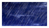
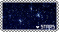
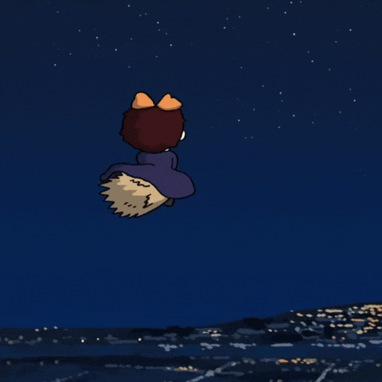

What is this?
Where the only visitor of this site can watch/learn the planets.
Can she witness the bursting, rebirth and formation of every star?
She can, if she’s one of earthly specices – so her ghost can drift to the universe and gaze at all entirety; which I’m hesitated to affirm because sometimes I can’t tell if she’s an angel or a mortal being.





|